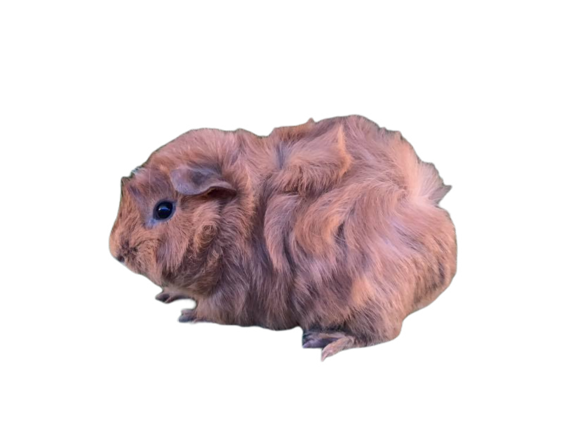
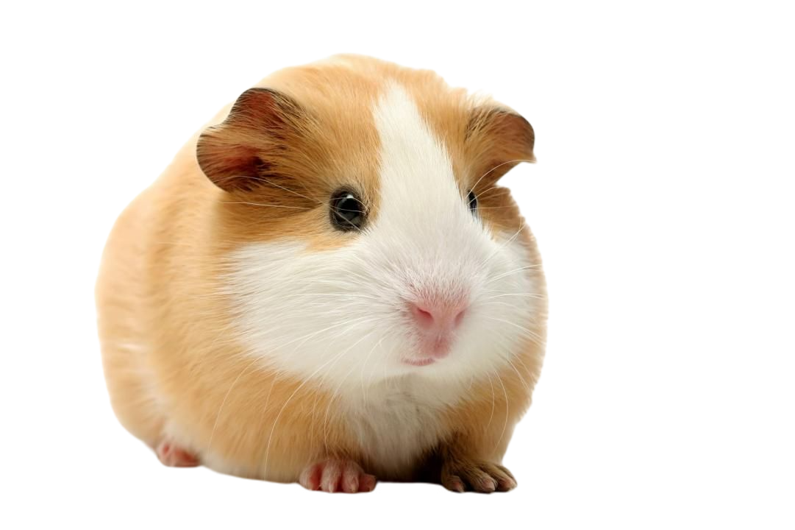

<!DOCTYPE html>
<!-- Website template by freewebsitetemplates.com -->
<html>
<head>
	<meta charset="UTF-8">
	<title>臭鼠</title>
	<link rel="stylesheet" href="css/style.css" type="text/css">
	<style type="text/css">

.float-button {
position: fixed; //關键
width: 30px;
bottom: -15px;
right: 3px;
}
	
</head>
<body>
<div class="float-button"> 
    <a href="#top"></a>
</div>
	<div id="header">
		<div><center>
			<div id="logo"><div>
				<a href="index.html"></a>
			</div>
			
			<div style="border:4px white solid; font-size: 26px;background-color: lightgoldenrodyellow;">天竺鼠很胖又臭</div>
			</div></center>
			<div style="font-size: 23px">
			<ul id="navigation">

				<li class="selected">


					<a href="index.html">主頁</a>
				</li>
				<li>
					<a href="shop.html">天竺鼠？</a>
				</li>
				<li>
					<a href="about.html">臭臭胖胖</a>
				</li>
				<li>
					<a href="blog.html">還是想養</a>
				</li>
				<li>
					<a href="contact.html">相關網站</a>
				</li>
			</ul></div>
		</div>
	</div>
	<div id="contents">

		<div id="about">
			<a href="#1">天竺鼠外型</a>
			<a href="#2">天竺鼠叫聲</a>
			<a href="#3">天竺鼠習性</a>
			<a href="#4">天竺鼠寶寶</a>
			<p id="1">
			<h3>欸！天竺鼠外型</h3>
			<pre>
			<p>
他們的外形有幾分像豬，腦袋大、身材小、脖子粗、屁股圓，但沒有那條無關緊要的尾巴。
豚鼠的體形在嚙齒類動物中偏大，體重在700－1200克（1.5－2.5磅）之間，體長在20－25厘米（8－10英寸）之間。
它們的平均壽命在4到5年之間，不過最長可活8年。據2006年金氏世界紀錄，最長壽的豚鼠存活了14年10個月之久。

<center></center>

			</p></pre>
			<p id="2">
			<h3>欸！天竺鼠的叫聲與行為</h3>
			<pre>
			<p>
豚鼠知道如何穿過錯綜複雜的通道找到食物，而且在幾個月之內都不會忘記曾經走過的路線。解析是它們最有力的策略行為。
豚鼠會跳過小障礙物，它們不會攀爬，不是特別靈巧。它們極易受到驚嚇，感到危險存在時，不是長時間呆在原地，就是一溜兒煙藏起來。
如果一群豚鼠受到驚嚇，它們會亂作一團，紛紛四處逃竄，以此局面迷惑敵人。它們興奮的時候就會反覆蹦來蹦去，這個動作很像雪貂的戰陣舞。

相互清理身體的豚鼠
和多數齧齒動物一樣，豚鼠有時相互清理身體，它們也定期做自我清理。它們的眼睛裡分泌出一種奶白色的物質，然後把這種物質塗在毛髮表面。
一群一起生活的雄性豚鼠經常相互咀嚼彼此的毛髮，這不僅僅是社會行為，更是確立每一隻豚鼠在這個群體中的地位等級的方法。
同時確立統治優勢的行為還有口咬（尤其是耳朵），立毛，挑畔性聲音，頭撞和跳躍攻擊。在單性群體中，常有為老大提供模擬性交的現象發生。

豚鼠的視力很差，但是聽覺、嗅覺和觸覺卻非常敏銳。聲音是這個物種之間相互交流的主要手段。
<center>
<iframe width="560" height="315" src="https://www.youtube.com/embed/qCde1GVbMfs" title="YouTube video player" frameborder="0" allow="accelerometer; autoplay; clipboard-write; encrypted-media; gyroscope; picture-in-picture" allowfullscreen></iframe>
			<pre>跳躍鼠鼠</pre>

			</p></pre>
			<p id="3">
			<h3>欸！天竺鼠的習性</h3>
			<pre>
			<p>
家養豚鼠繁殖力強大；人們通常讓幾隻雌性，或者一隻或多隻雌性與一隻去勢的雄性在一起生活。豚鼠懂得識別其他的同伴，並與它們交流。
經過對雄性豚鼠的觀測得知，如果它們的雌性伴侶身邊出現其它陌生的雌性同類，這隻雄性的神經內分泌反應會顯著下降。
如果幾隻雄性豚鼠從小一起生活，其中沒有雌性同類，而籠子的空間足夠活動，那麼它們也許能夠和平相處。
家養的豚鼠與它們的野外同類具有不同的生物節律，它們睡眠時間較少，活動時間較長。每天的活動無規律得分散在一天24小時內，除了迴避強光之外，沒有明顯得生活節奏模式可循。
主人把籠子打掃乾淨以後，它們一定不忘在地板上拖拽著屁股，用尿液劃出自己的領土範圍。雄性豚鼠即使不在籠子裡可能也會使用相同辦法給自己的地盤做標記。
豚鼠個性溫馴，其他齧齒動物還可能欺負豚鼠，個頭大一些的動物也許會把豚鼠當點心。
<center>
	
	
			<pre>鼠鼠與貓貓的和平共處(我家的貓都會巴我的寶貝鼠-.-)</pre>

</center>

			</p></pre>
			<p id="4">
			<h3>欸！天竺鼠寶寶</h3>
			<pre>
			<p>
豚鼠可以長年生育，生育高峰通常集中在春天；每年能產五窩小北鼻。妊娠期長達59－72天，平均63－68天。由於妊娠期偏長，胎兒體積過大，
懷孕的母體明顯腫脹，看上去像一隻茄子，不過每隻母鼠的變化程度各有不同。豚鼠的新生兒的毛髮，牙齒，爪子發育健全，而且具有部分視力。
豚鼠一生下來即能活動，開始吃流質食物，不過還是要吸吮母乳。一窩幼崽的數量從1－6隻不等，平均是3隻；最多的紀錄達17隻。胎兒數量較少時，
它們的體積過大，可能造成母鼠分娩困難。胎兒數量較多時，產生死胎的可能性較大。但是接生技術發展完善，即使缺少母乳，基本不會造成幼崽死亡。
在一起居住的母鼠彼此會為別的母鼠所生的幼崽哺乳。
<center><iframe width="560" height="315" src="https://www.youtube.com/embed/Cy68rVFaWdw" title="YouTube video player" frameborder="0" allow="accelerometer; autoplay; clipboard-write; encrypted-media; gyroscope; picture-in-picture" allowfullscreen></iframe></center>
			
			<pre>影片中的puipui就是寶寶鼠的年紀，寶寶鼠叫聲比成年天竺鼠尖銳，可以撥放來聽看看！</pre>
			</p></pre>
		</div>
	</div>
	<div id="footer">
		<div id="connect">
			<a href="https://www.facebook.com/guineapiglove520/" target="_blank" class="facebook"></a><a href="http://www.freewebsitetemplates.com/misc/contact/" target="_blank" class="email"></a>
			<a href="https://twitter.com/search?q=%23%E5%A4%A9%E7%AB%BA%E9%BC%A0%E8%BB%8A%E8%BB%8A" target="_blank" class="twitter"></a>
			<a href="https://www.google.com/search?q=%E5%A4%A9%E7%AB%BA%E9%BC%A0&source=lmns&bih=754&biw=1536&hl=zh-TW&sa=X&ved=2ahUKEwjExYin9a71AhWyNaYKHdUgCJYQ_AUoAHoECAEQAA" target="_blank" class="googleplus"></a>
		</div>
		<p>
			© 2023 Vistida. All Rights Reserved.
		</p>
	</div>
</body>
</html>
